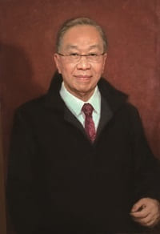

董事長

董事長 謝孟雄博士
現職
- 實踐大學董事長
- 實踐大學講座教授
- 東吳大學講座教授
- 臺北醫學大學名譽教授
- 北京大學客座教授
- 青島大學客座教授
- 廣州中山大學客座教授
- 西安交通大學客座教授
- 江西財經大學客座教授
- 華中師範大學客座教授
- 北京外國語大學客座教授
- 促進中國現代化學術研究基金會董事
- 中華民國社區發展協會理事長
學歷
- 美國賓夕法尼亞大學醫學博士
經歷
- 監察院監察委員（第二屆）
- 考試院典試委員
- 臺北醫學大學校長
- 實踐大學校長
- 韓國慶熙大學校榮譽教授
- 臺灣營養學會理事長（創始人）
- 董氏基金會董事長
- 中華家政學會理事長
- 臺北市立美術館攝影評審委員
- 大學校院攝影比賽評審委員
- 中央機關公務人員書畫攝影展覽攝影類評審委員
- 中華藝術攝影家學會榮譽會員
榮譽
- 民國七十六年獲教育部頒發師鐸獎
- 民國八十四年獲教育部頒發師鐸獎
- 民國九十二年獲教育部頒發績優僑輔人員獎
- 民國一○四年獲鄭貞銘教授與中國學者丁士軒一同編著《百年大師》收錄為兩岸「百位文化藝術大師」
著作
- 子宮異常出血之研究
- 中年婦女的疾病與防治
- 人口計畫之整體研究：就人類生態學觀點
- 婚姻與健康
- 懷孕與育嬰
- 尿失禁之治療
- 醫療與社會工作
- 婦女衛生保健
- 實踐的陽光（論文集）
- 謝孟雄攝影集：舞
- 謝孟雄攝影集：天鵝湖
- 謝孟雄攝影集：探戈
- 跳躍的音符
- 鏡頭．印象：謝孟雄奧塞藝術
- 陽光的人生
- 2006中歐管樂節
- 謝東閔百歲誕辰紀念集
- 魅影：謝孟雄探戈攝影特輯
- 探戈
- 探戈與藍調的節奏
- 探索捷克波希米亞
- 夢幻西班牙
- 光與影：謝孟雄回顧展
- 光與影：謝孟雄回顧展 采錄
- 日本當代建築之旅
- 奧匈帝國風華